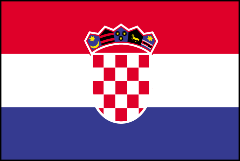

Prof. Mladen Pavičić
Pročelnik Katedre za fiziku
Građevinskog fakulteta
Sveučilišta u Zagrebu
UPRAVI ZA ZNANOST
Ministarstva znanosti, obrazovanja i športa
4. puta: Žalba na tretman
projekta Mladen
Pavičić, Kvantno računanje: paralelnost i
vizualizacija (1184) od strane Prosudbene skupine i
prijedlog izdvojenog procesiranja revidirane
verzije projekta (3380) KLASA: 402-07/06-08/00115
BROJ: 533-08-07-0004
Zagreb, 29.6.2007.
Cijenjeni,
Prije više od dva i pol mjeseca poslao sam Vam priloženu
žalbu, ali do danas nisam dobio njeno rješenje.
Također sam Vam prije četiri tjedna i prije desetak dana
poslao dva požurna pisma.
Ono što sam od Ministarstva dobio je pismo (koje je na fakultet
stiglo 27.6.2007., a nosi datum 19.6.2006.) Zamjenice Ministra
dr. sc. Andree Tomljenović koje nije rješenje naše
žalbe i koje ne zadovoljava osnovne norme procedure
obrade i sadržajnog uvažavanja uredno zaprimljene i
obrazložene žalbe.
U pismu ne postoji obrada argumentiranih i dokazanih
detalja naše žalbe već je žalba samo spomenuta
iskazom "razmotrili smo je".
Nakon toga se inzistira da su svi postupci
"usklađeni s praksom
postupka vrjednovanja u zemljama Europske unije".
D e t a lj i
Naša žalba ukazuje na slijedeće iregularne i
neprihvatljive postupke Prosudbene skupine i argumentirano
traži da se njen prijedlog odbaci, a prihvate prijedlozi
recenzenata.
1. Prosudbena skupina je u potpunosti odbacila ocjene i preporuke
recenzenata i brojne dostupne podatke o visokoj znanstvenoj
kvaliteti voditelja i suradnika; da li
Ministarstvo doista želi tvrditi da je to "praksa
postupka vrjednovanja u zemljama Europske unije" ?
2. Prosudbena skupina do danas nije objavila svoje kriterije i
djelovala je samovoljno, bez konsenzusa znanstvene zajednice i
protivno proklamiranoj politici ovog Ministarstva o ulozi
recenzenata; da li
Ministarstvo doista želi tvrditi da je to "praksa
postupka vrjednovanja u zemljama Europske unije" ?
3. Iz naše detaljne komparativne analize svih prihvaćenih
projekata i našeg projekta proizlazi da Prosudbena skupina
nije primijenila jednake kriterije na naš i ostale
prihvaćene projekte - štoviše, po navodnim
kriterijima Prosudbene skupine naš se projekt
nalazi blizu sredine rang liste prihvaćenih
projekata; da li
Ministarstvo doista želi tvrditi da je to "praksa
postupka vrjednovanja u zemljama Europske unije" ?
Zbog svega toga, a rukovodeći se detaljnom analizom koju
smo proveli, koju prilažemo i koja je dobavljiva na
hrvatskom i engleskom (zajedno s ovom korespondencijom)
na slijedećoj web adresi:
http://m3k.grad.hr/pavicic/projekt/
ponovno molimo:
1. da se revidirana verzija (3380) našeg projekta prvo
pošalje istim recenzentima koji su ocjenjivali prvobitnu
verziju (1184);
2. da se nakon primitka mišljenja recenzenata
ne dozvoli
da prosudbena skupina mijenja ocjene koje su dali recenzenti;
3. da se naš projekt prema ocjenama recenzenata
rangira među 72 već prihvaćena projekta - kako bi se
kompenzirala šteta nanesena projektu neprimjerenom intervencijom
prosudbene skupine u mišljenje i prijedlog recenzenata;
4. da se odobri trajanje projekta od 5 godina i pridruživanje
programu Distribuirana obrada i znanstvena vizualizacija podataka
prof. dr. sc. Karolja Skale kao što je prvobitno bilo
prijavljeno u okviru
verzije 1184 - kako bi se kompenzirala šteta nanesena projektu
neprimjerenom intervencijom prosudbene skupine u mišljenje i
prijedlog recenzenata;
5. da se po primitku konačne ocjene recenzenata
odobri naknadno traženje opreme za projekt - kako bi se
kompenzirala šteta nanesena projektu neprimjerenom intervencijom
prosudbene skupine u mišljenje i prijedlog recenzenata;
6. da se već sad, na početku projektnog perioda definira
način ocjenjivanja projekata tijekom perioda i kriteriji za
dodjelu novih projekata nakon isteka sadašnjih.
Najljepše molimo za što skorije rješenje
žalbe - točku po točku uz obrazloženje i
eksplicitne provjerljive argumente za svaku
točku u skladu s praksom
postupka vrjednovanja u zemljama Europske unije.
Pod tim podrazumijevamo da neko tijelo Ministarstva, u ovom
slučaju Uprava za znanost koje čine ljudi s
imenom i prezimenom, stavi našu žalbu
na dnevni red jedne od svojih sjednica, detaljno je razmotri
i proslijedi nam svoju odluku i zapisnik.
Takva procedura
je, smatramo, ono što bi prije svih ostalih Ministarstvo
trebalo prihvatiti kao doprinos izgradnje naše budućnosti
i zemlje "zasnovanih na
znanju" i u skladu s praksom
postupka vrjednovanja u zemljama Europske unije i SAD-a.
Ja sam (ili sam bio) recenzent tijela za procjenu i odobravanje federalnih i
nacionalnih znanstvenih projekata na četiri kontinenta,
recenzent vrhunskih svjetskih znanstvenih
izdavača, supervizor odluka drugih recenzenata u slučajevima
žalbi, član nekoliko svjetskih asocijacija i znanstvenih
društava i suosnivač jedne internacionalne znanstvene
asocijacije sa sjedišem u USA i mogu reći da nigdje i nikad
nisam naišao na slučaj da se jedna argumentirana analiza i
žalba otpušta s "razmotrili
smo".
Mladen Pavičić
Voditelj projekta
Prilozi:
-3.
Pismo Pomoćnice Ministra
dr. sc. Andree Tomljenović, zaprimljeno 27.6.2007.
-2.
Požurno pismo koje Vam je poslano 21.6.2007.
-1.
Požurno pismo koje Vam je poslano 30.5.2007.
0.
Žalba koja Vam je poslana 5.4.2007.
1.
Usporedna analiza tretmana projekta od strane prosudbene
skupine
2.
Recenzije prijedloga projekta Kvantno računanje:
paralelnost i vizualizacija
3.
Dopis prosudbene skupine Ministarstvu kojim odbija projekt
4.
Impact Factor rang lista voditelja 72 od
odobrena projekta iz fizike i našeg voditelja
i njegovih suradnika
5.
Current Contents rang lista voditelja 72
odobrena projekta iz fizike i našeg voditelja
i njegovih suradnika
6.
Rang lista citiranosti voditelja 72 od
odobrena projekta iz fizike i našeg voditelja
i njegovih suradnika
7.
Kopija pisma državnog tajnika prof. dr. sc. Dražena Vikić Topića
od 15.1.07.